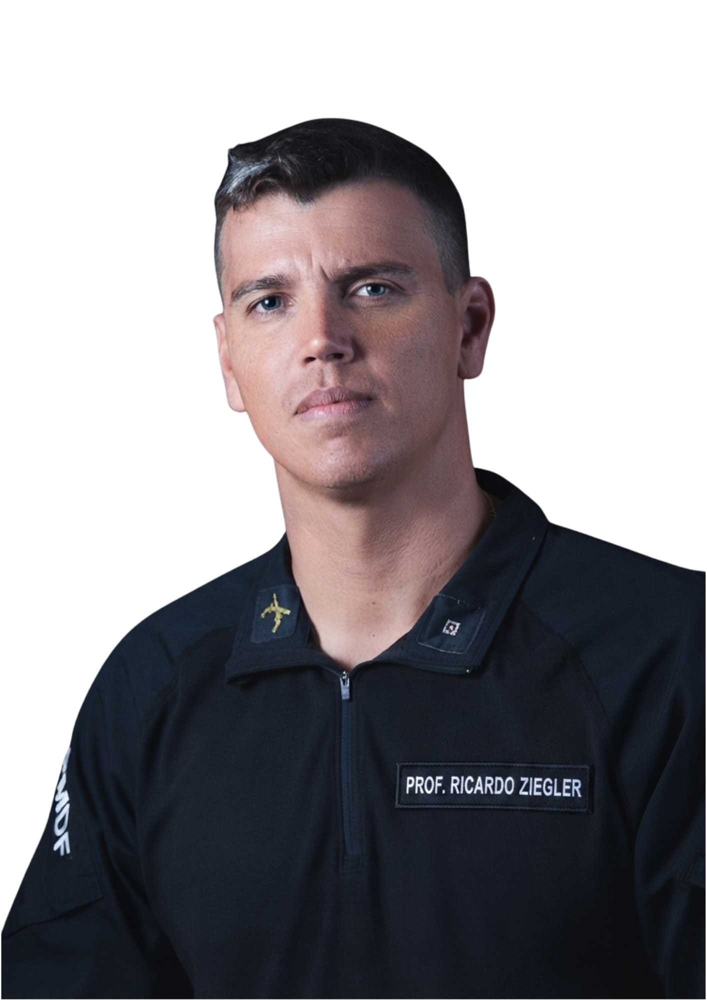

Quem se prepara
antes, sai na frente no CFO PMGO.
Tenha acesso a condições e ofertas exclusivas diretamente com o professor que mais aprovou alunos para a Polícia Militar.
POLÍCIA MILITAR DE GOIÁS
•
GRUPO VIP
QUERO PARTICIPAR